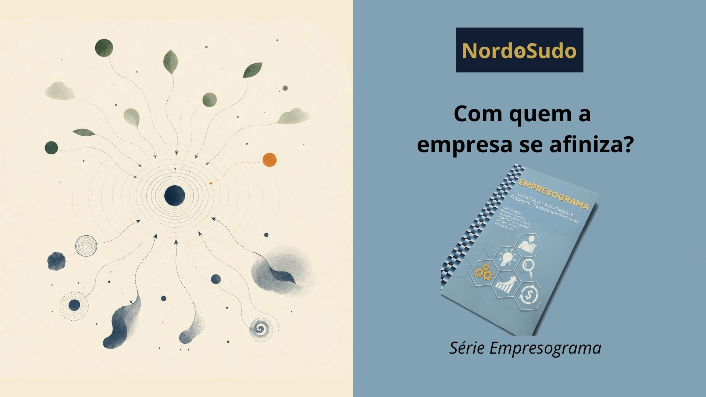

Redação: Rafael Guimarães Pereira | Revisão: Vânia Cristina Pereira Cabral
A pergunta desta semana do nosso Empresograma é a número 008:
"Qual o nível de conscientização dos integrantes da empresa na identificação do grupo de consciexes afinizadas com o materpensene da empresa e a importância do exemplarismo da continuidade perante o grupo?"
No Paradigma Consciencial, as consciexes são consciências extrafísicas, ou seja, consciências que não carregam o soma, veículo físico “de carne e osso” e seguem sua jornada evolutiva em outra dimensão, mantendo, no entanto, contínuo intercâmbio com a nossa dimensão intrafísica.
Para quem nunca ouviu falar do Paradigma Consciencial, existe o conceito de holossoma, o conjunto de veículos de manifestação da consciência. Nenhum deles é, no entanto, a própria Consciência. Os veículos nos permitem transitar em diferentes dimensões, assim como um carro nos permite viajar pelas rodovias, um barco pela água e um avião pelo ar.
Se admitimos, portanto, a presença de consciexes e que elas, assim como as consciências que possuem corpo físico, têm sua singularidade, preferências e modo próprio de agir e decidir, surge uma pergunta interessante: com que grupo de consciexes eu me afinizo pessoalmente? E com que grupo de consciexes a nossa empresa se afiniza? Em outras palavras, com quem estamos interagindo multidimensionalmente?
A complexidade aumenta quando percebemos que, em uma empresa, estamos falando simultaneamente das pessoas que enxergamos com os olhos físicos, os stakeholders, como colaboradores, funcionários, acionistas, governo, clientes e prestadores, e também dos chamados parastakeholders: as consciexes que acompanham esses stakeholders ou que têm afinidade com a empresa.
E essa afinidade pode acontecer tanto pelas coisas boas que estão sendo feitas quanto pelas atitudes erradas. Daí a importância de manter pensamentos, sentimentos e energias equilibrados. São muitos os interesses e interessados presentes simultaneamente nas relações empresariais.
Nesse contexto, podemos observar o materpensene da empresa: qual é o pensamento, sentimento e energia predominante? O que, de fato, move aquela organização? Assim como as conscins, as consciexes podem se afinizar pelas ideias, pelas energias das pessoas e pelos seus sentimentos. Se as ideias forem elevadas, as energias forem positivas e os sentimentos forem bons, podemos esperar a companhia de consciexes amparadoras, orientando e atuando em prol da interassistência.
As empresas também podem ser locais de interassistência. O contrário, naturalmente, também é válido. Padrões de pensamento, sentimentos e energias menos elevados podem estabelecer outras afinidades e outras companhias. Por isso, a nossa conduta multidimensional merece atenção. Ela começa no padrão de pensamentos e sentimentos e chega até a ação. O que fazemos na empresa, a maneira como nos relacionamos e aquilo que sustentamos energeticamente participam da construção do ambiente que estamos criando a todo o momento.
As companhias que temos, intrafísicas ou extrafísicas, são aquelas afinizadas com nosso padrão pensênico. Isso vale para cada um de nós e vale também para as organizações às quais participamos de forma direta ou indireta e que ajudamos a construir.
E você, já pensou sobre com quem a sua empresa está se afinizando?
#Empresograma #Interassistência #Cosmoética #Conscienciologia #Nordosudo